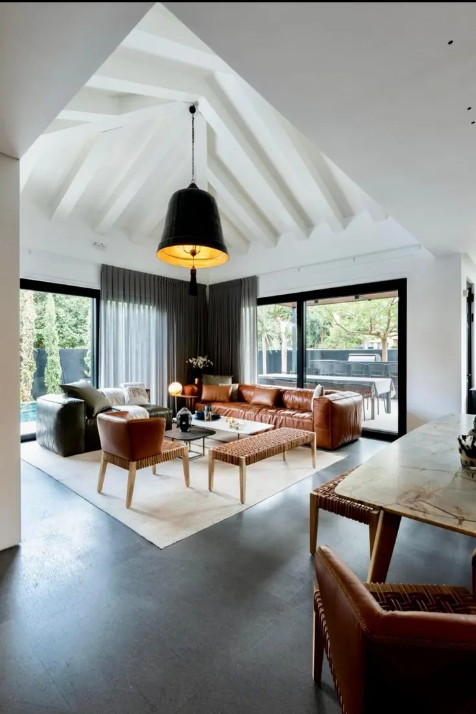
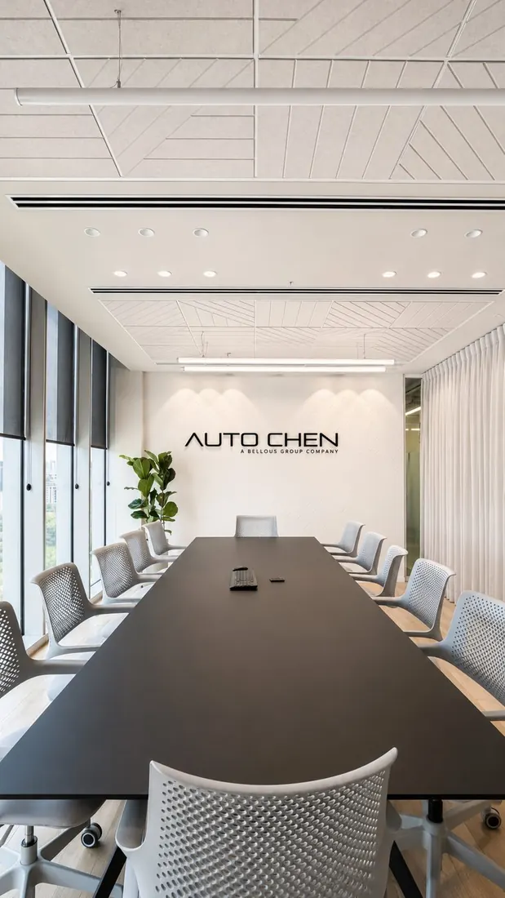
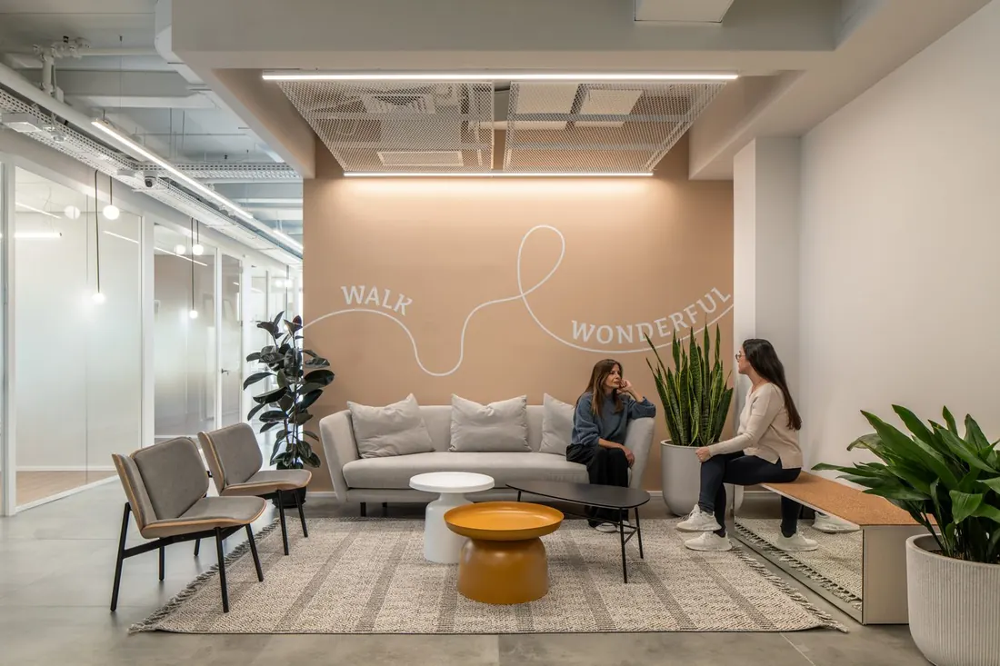
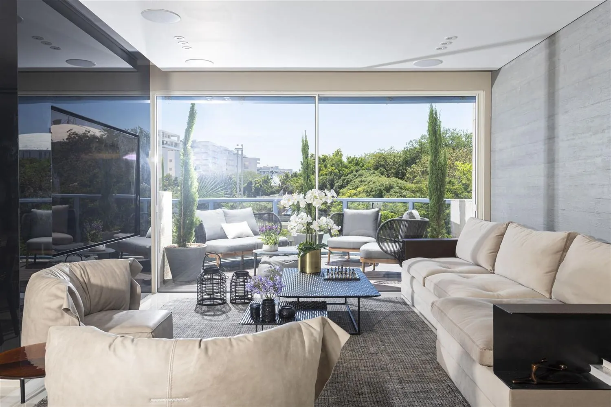
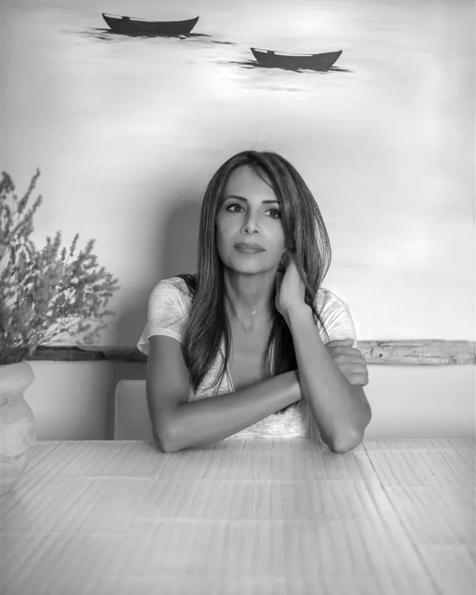
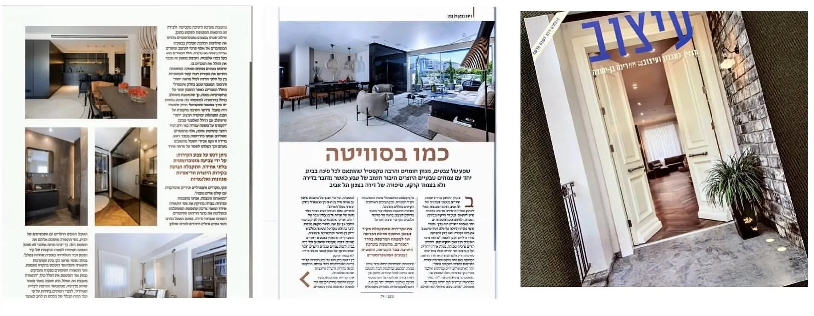

עיצוב למגורים
תכנון ועיצוב של חללי מגורים לאורח החיים, לצרכים ולטעם הייחודי שלכם.
Make Your
House Home.
עיצוב נקי ומדויק, בליווי אישי, מהרעיון ועד הפרט האחרון.
תכנון ועיצוב של חללי מגורים לאורח החיים, לצרכים ולטעם הייחודי שלכם.

עיצוב סביבות עבודה המשלבות בין פונקציונליות ואופי, תוך התאמה לאנשים ולעסק.

בחירה מדויקת של טקסטיל, תאורה, אומנות ואביזרים.

במקום להתחיל מחדש, הענקת חיים חדשים לחללים קיימים.

פרויקטים
אודות

מעצבת פנים והום סטיילינג. מסע ההשראה שלי החל בארצות הברית, שם התגוררתי במשך שני עשורים. החיים זימנו לי ביקורים תכופים באתרי נופש ובתי יוקרה ביעדים שונים סביב העולם, מסע שהתגבש לתשוקה גדולה לאסתטיקה בכלל ולעיצוב בפרט.
עיצוב הבית מבחינתי הוא כניסה לעולמו האישי של הלקוח הממוקד בצרכיו, רצונותיו, אורח החיים שלו והגשמת רצונותיו.
אני מאמינה בעיצוב חלל נקי מאלמנטים מיותרים והפיכת הבית למקום שכיף לחיות בו, לא משנה גודלו.

כתבה על פרויקט במגזין ״עיצוב״
אפשר לבחור את החומרים הנכונים וריהוט יוקרתי ועדיין, להרגיש שמשהו חסר. הום סטיילינג הוא השלב שבו הבית מקבל חום ונשמה, עם טקסטיל, תאורה, צבע, אביזרים ואיך שכל אלה נפגשים יחד.